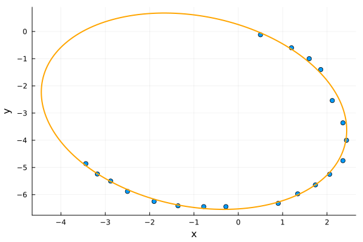

Implicit orthogonal regression
Estimate the parameters of an ellipse from a set of coordinates.
\[\begin{align*} f(\bm{X}, \bm{\beta}) & = \frac{\left[(x-x_0)\cos\theta + (y-y_0)\sin\theta\right]^2}{a^2} \\ & + \frac{\left[(y-y_0)\cos\theta -(x-x_0)\sin\theta\right]^2}{b^2} - 1 = 0 \end{align*}\]
\[\bm{X} = (x,y)\]
\[\bm{\beta} = (x_0, y_0, a, b, \theta)\]
using Odrpack
using PlotsFirst, we define the observed data and the model function.
# Each row represents a point (x, y) of the ellipse
Xdata = [
0.50 -0.12
1.20 -0.60
1.60 -1.00
1.86 -1.40
2.12 -2.54
2.36 -3.36
2.44 -4.00
2.36 -4.75
2.06 -5.25
1.74 -5.64
1.34 -5.97
0.90 -6.32
-0.28 -6.44
-0.78 -6.44
-1.36 -6.41
-1.90 -6.25
-2.50 -5.88
-2.88 -5.50
-3.18 -5.24
-3.44 -4.86
]
# Ydata is not used, but is required
Ydata = zeros(size(Xdata, 1), 1)function f!(X::Matrix{Float64}, beta::Vector{Float64}, Y::Matrix{Float64})
x0, y0, a, b, θ = beta
x = X[:, 1]
y = X[:, 2]
Y .= ((x .- x0) * cos(θ) .+ (y .- y0) * sin(θ)).^2 / a^2 .+
((y .- y0) * cos(θ) .- (x .- x0) * sin(θ)).^2 / b^2 .- 1
return nothing
endf! (generic function with 1 method)Then, we define a plausible initial guess $\bm{\beta_0}$ for the model parameters, as well as the corresponding bounds.
beta0 =[0.0, 0.0, 1.0, 1.0, 0.0]
lower = [-1e2, -1e2, 0e0, 0e0, -π/2]
upper = [+1e2, +1e2, 1e2, 1e2, +π/2]Here, we expect the measurement error to be the same across both $\bm{X}$ coordinates, so a special weighting scheme is unnecessary.
weight_x = 1.0We can now launch the regression! As the problem is implicit, we set task=:implicitODR. If you want to see a brief computation report, set report=:short.
sol = odr_fit(f!, Xdata, Ydata, beta0, bounds=(lower, upper), weight_x=weight_x,
task=:implicitODR, report=:none);OdrResult([-0.9993800211050025, -2.9310494441764967, 3.8642238221303713, 3.1566378669870265, -0.9035908997463595], [0.034071329414516544 0.0476863719540254; -0.02651803460679337 -0.025521084990670094; … ; 0.005742027579423113 0.005519273107733468; -0.03592720488737706 -0.028363456499125313], [-9.428456488880244e-7; 5.823323465659058e-7; … ; 1.2603324606175192e-7; -7.224704037245289e-7;;], [0.5340713294145165 -0.0723136280459746; 1.1734819653932065 -0.62552108499067; … ; -3.174257972420577 -5.234480726892267; -3.475927204887377 -4.888363456499126], [-9.428456488880244e-7; 5.823323465659058e-7; … ; 1.2603324606175192e-7; -7.224704037245289e-7;;], [0.11138456641530114, 0.1097685079436282, 0.16743608612554478, 0.029483626681057223, 0.05608879211939437], [2.1089475711545695 -1.9437989936821813 … -0.2768700776946555 -0.5892817294076879; -1.9437989936821813 2.048194841291545 … 0.24463484796998708 0.36497998338385396; … ; -0.2768700776946555 0.24463484796998708 … 0.14776703295503574 0.11710093923506855; -0.5892817294076879 0.36497998338385396 … 0.11710093923506855 0.5347710899660251], 0.005882802306333546, 306, 0, 28, 0, 0.01259539726667185, 2, "Parameter convergence.", true, 0.08824456161145848, 0.08824203459500318, 2.527016455299679e-6, Int32[-1, 0, 0, 0, 0, 0, -1, 0, 0, 1 … 306, 0, 31, 0, 20, 0, 0, 0, 0, 0], [0.034071329414516544, -0.02651803460679337, -0.06465512221768493, -0.06022261151744937, 0.1539307436603865, 0.07496279695483125, -0.013484151494493982, -0.09209135882803683, -0.02957901037995047, -0.002243308985462871 … 0.0, 0.0, 0.0, 0.0, 0.0, 0.0, 0.0, 0.0, 0.0, 0.0])The result is packed in a OdrResult struct. Let's check the solution convergence and the estimated model parameters.
sol.stopreason"Parameter convergence."sol.beta5-element Vector{Float64}:
-0.9993800211050025
-2.9310494441764967
3.8642238221303713
3.1566378669870265
-0.9035908997463595All fine! Let's plot the solution.
# Plot observed data
scatter(Xdata[:, 1], Xdata[:, 2], label="Data", legend=false)
# Plot fitted ellipse
x0, y0, a, b, θ = sol.beta
t = range(0, 2π; length=200)
ellipse_x = x0 .+ a .* cos.(t) .* cos(θ) .- b .* sin.(t) .* sin(θ)
ellipse_y = y0 .+ a .* cos.(t) .* sin(θ) .+ b .* sin.(t) .* cos(θ)
plot!(ellipse_x, ellipse_y, color=:orange, linewidth=2, label="Fit")
xlabel!("x")
ylabel!("y")